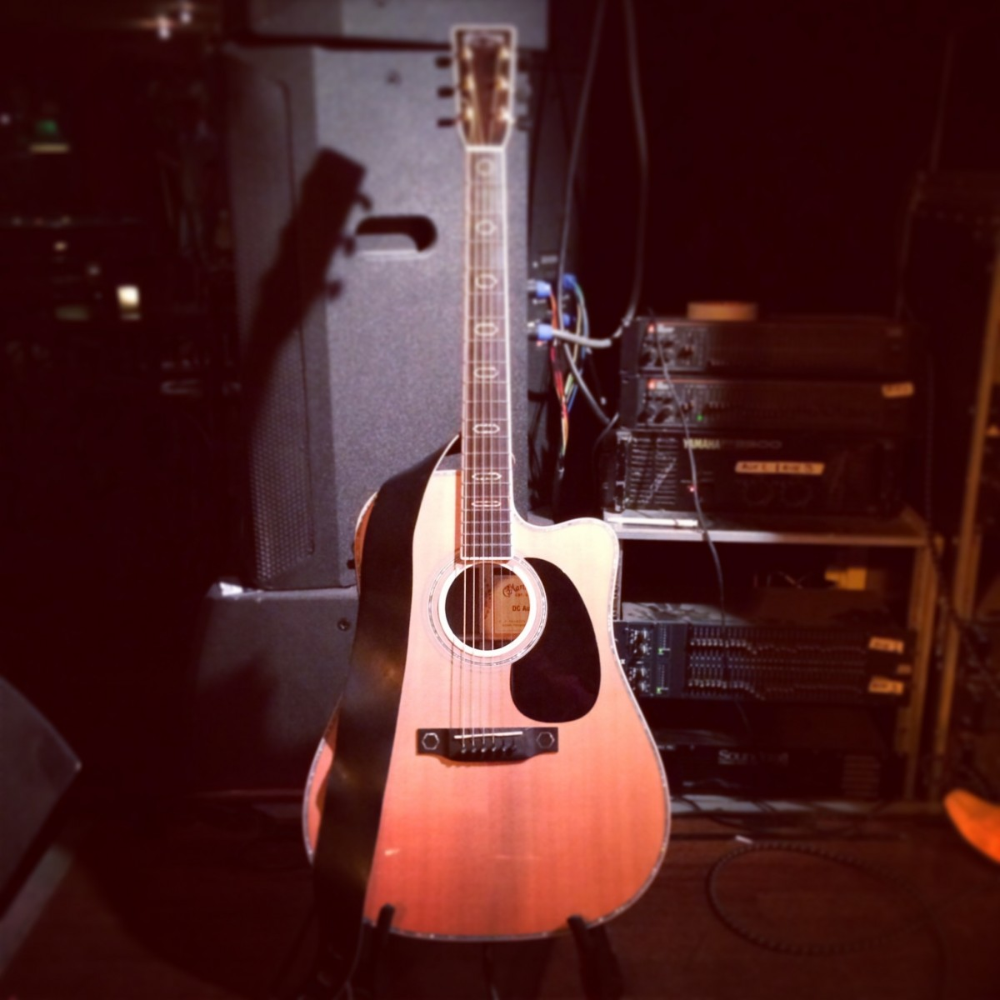

Look at the possibilities with the guitar!
And the most possible types!!

How about a great acoustic guitar?
Just the magic of his blue water reflex sound...
The Rock sound of the Eletric Guitar!
Bang your head to the dirty sound!!!!

You are just a rythm type of guy?
Oh sure! This little boy too!
Oh, we have room for alt people with alternative guitars
And we like animals too!!